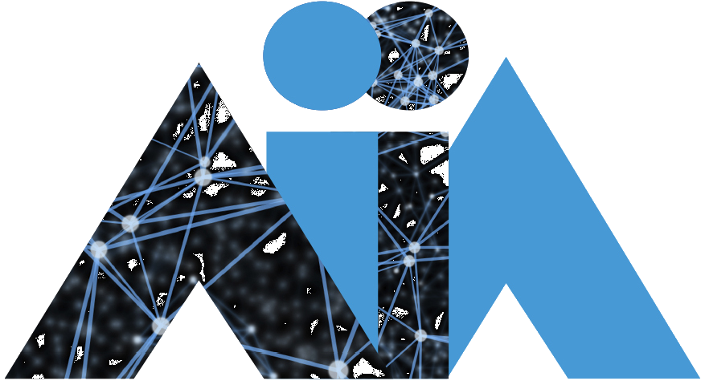

This event follows the series of RCRA (Knowledge Representation and Automated Reasoning) annual meetings, held since 1994. The success of the previous events shows that RCRA is becoming a major forum for exchanging ideas and proposing experimentation methodologies for algorithms in Artificial Intelligence.
The workshop is co-located with AIxIA 2026 — 24th International Conference of the Italian Association for Artificial Intelligence.

24th Int. Conference of theMany problems in Artificial Intelligence show an exponential explosion of the search space. Although stemming from different research areas in AI, such problems are often addressed with algorithms that have a common goal: the effective exploration of huge state spaces. Many algorithms developed in one research area are applicable to other problems, or can be hybridized with techniques in other areas. Artificial Intelligence tools often exploit or hybridize techniques developed by other research communities, such as Operations Research. In recent years, research in Artificial Intelligence has more and more focused on experimental evaluation of algorithms, the development of suitable methodologies for experimentation and analysis, the study of languages and the implementation of systems for the definition and solution of problems.
The scope of the workshop is fostering the cross-fertilization of ideas stemming from different areas, proposing benchmarks for new challenging problems, comparing models and algorithms from an experimental viewpoint, and, in general, comparing different approaches regarding efficiency, problem modelling, and ease of development.
Topics of interest include, but are not limited to:
Alessandro Bertagnon
University of Ferrara, Italy
Marco Maratea
University of Calabria, Italy
Enrico Scala
University of Brescia, Italy
Luciano Serafini
FBK, Italy
Mauro Vallati
University of Huddersfield, UK
Authors are invited to submit either original and non-original papers.
Publications showing negative results are welcome, provided that the approach was original and very promising in principle, the experimentation was well-conducted, the results obtained were unforeseeable and gave important hints in the comprehension of the target problem, helping other researchers to avoid unsuccessful paths.
RCRA-it 2026 uses EasyChair for the submission of contributions. Contributions must be submitted through https://easychair.org/conferences/?conf=rcrait2026.
Submit your paper →Accepted original papers will be published in the CEUR Workshop Proceedings (upon authors' confirmation), possibly in conjunction with other workshops.
Moreover, as in some previous editions, we are considering the possibility of having a special issue of an international journal, provided that a sufficient amount of high-quality papers is collected. All technical papers, original and non-original, will be eligible.